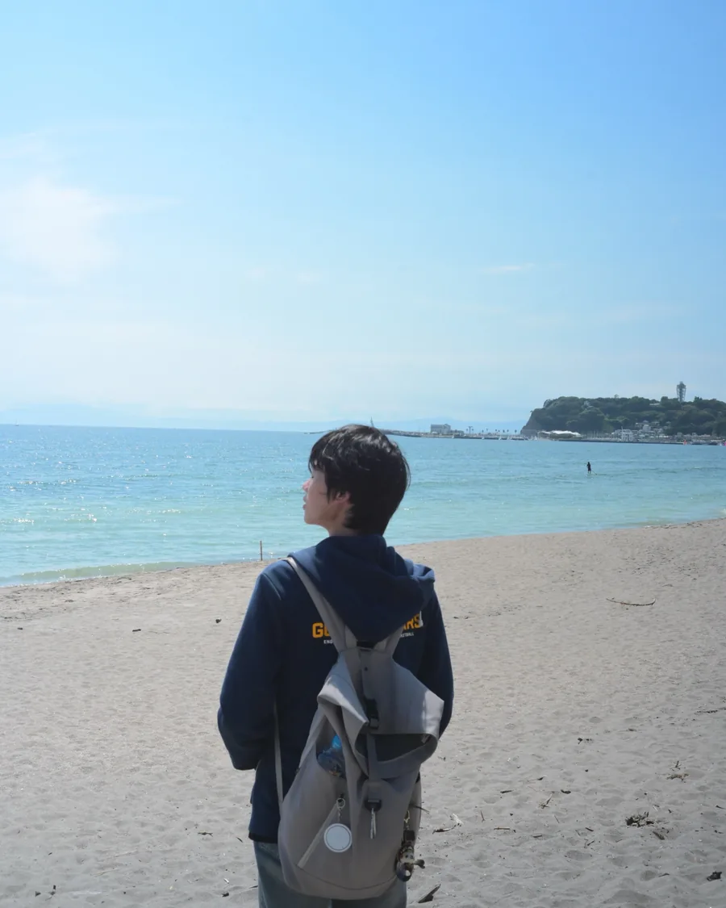

YufuChen
Spatial computingHCICognitive science
Think different
Spring 2028

In the workshop
Open threads · Oct 2026
Reliable memory for personalized AI glasses
Cross-session memory infrastructure: structured storage, provenance on every memory, entity and temporal scope validation, and retrieval built for the assistant to trust.
sEMG gesture interface for hands-free video
Four-channel forearm sensing, LDA/SVM decoding, five gesture states mapped to seven controls, with confidence rejection and single-trigger locking so a held hand never fires twice.
XR at Berkeley, co-president
XR workshops and outreach, including XREAL events and prospective Snap Spectacles collaborations, at 15–20 students a session; plus the Berkeley DeCal that teaches Unity, Blender and XR game development.
Selected projects
All 6 projectsFor internships, research collaborations and anything spatial. Berkeley, CA — Pacific time, usually awake late.